Physical Ergonomics.
An ergonomic study of garland makers in Alandi, making the physical risks embedded in a craft visible, that the discipline of ergonomics had never measured.
The question nobody had asked.
Ergonomic assessment has never been done for traditional Indian craft trades. We noticed garland makers working long hours near the Alandi temple in postures that no chair or workbench had ever been designed for and chose them as the subject precisely because no one in the discipline that should have studied them had.
The brief asked us to investigate physical ergonomics in a local context. We chose the trade that was both highly skilled and entirely undocumented.
Constraint One week of field access during a busy festival season. We could observe and interview between sales but never interrupt the work itself.
Pooja & Dilip Uddave.
Pooja and Dilip run a fourth-generation garland-making business at Kamble Wada, Alandi.
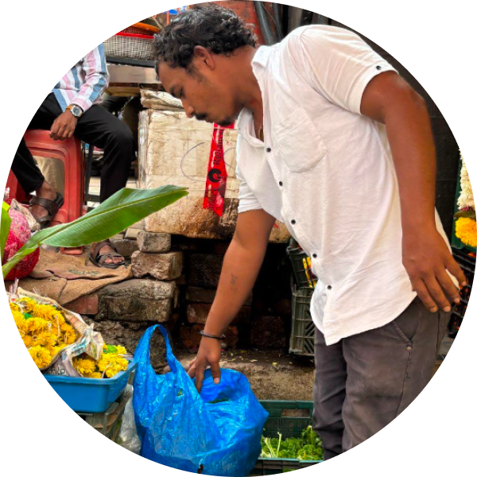
The Uddave family
GARLAND MAKERS · KAMBLE WADA, ALANDI EMPLOYS 3 WOMEN WORKERS 8–10 YEARS WORKING EXPERIENCE
A workspace shaped by what it had to be.
The space shapes what's possible. The shop runs 12.7 metres wide and divides into three working zones and none of them designed, but inherited. We documented both how the zones overlap in use, and the raw dimensions of the workstation itself.
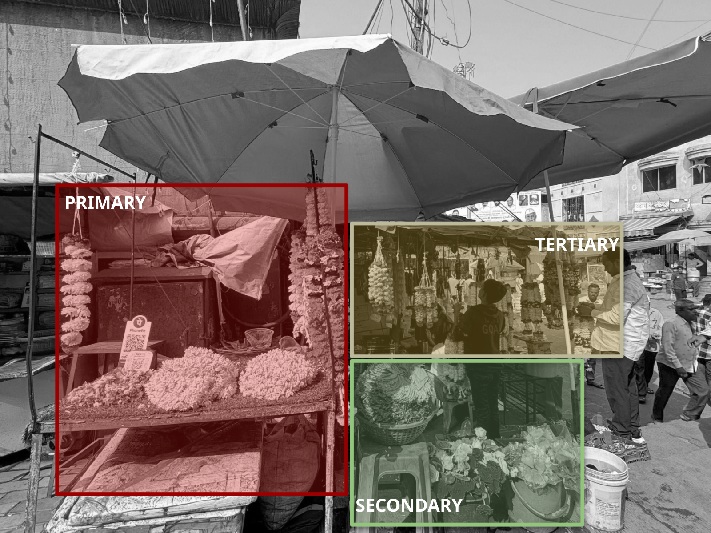
Fig. 01 · Use zones
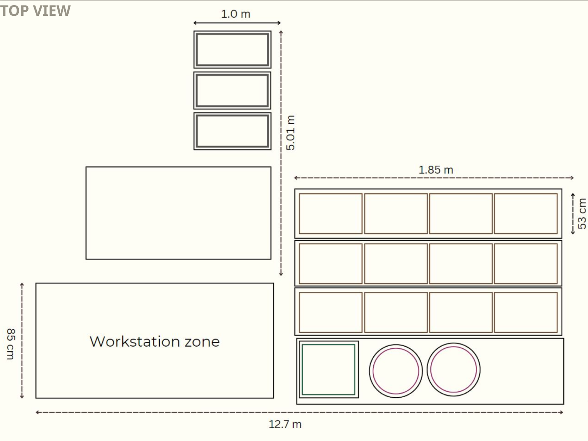
Fig. 02 · Dimensions
The workstation runs 85 cm deep, sized for storage, not for the body working at it. The 1.85 m flower-sorting area sits at floor level, requiring constant crouching. The customer area is uncovered and standing-only.
What a working day actually contains.
Before measuring physical cost, we needed the sequence of tasks. The working day breaks into two phases - stock preparation in the morning, then production and sale across the rest of the day. Knowing what repeats, and how often, was the prerequisite for everything that followed.
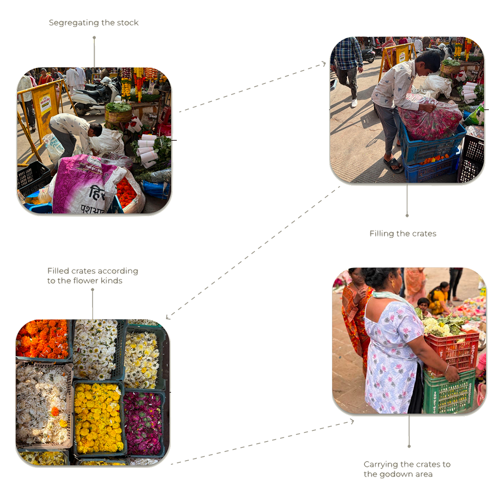
Segregating stock
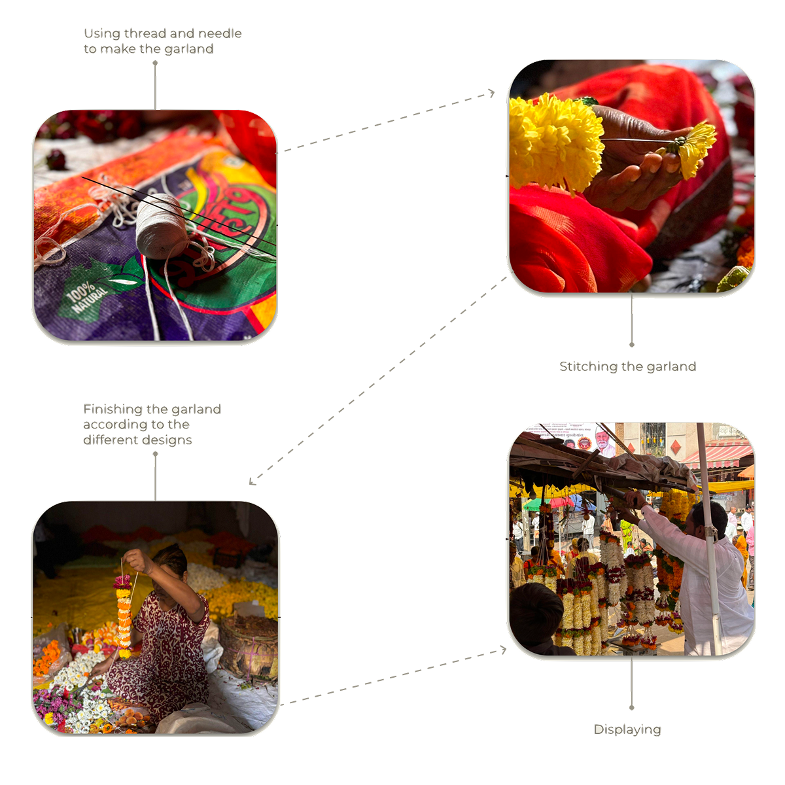
Stitching garlands
Most tasks repeat hundreds of times per day. The few that don't like carrying crates between godown and stall, for instance happen quite often. The next two sections measure both kinds of cost.
Improvised by necessity.
Four tools handle the whole production: a thread and needle, a razor blade, a pair of scissors, and a reused plastic bottle for misting the flowers. None purpose-built; all repurposed. The bottle in particular used as a humidifier for hours, represents the kind of make-do adaptation that an outside designer would never propose, but that the work demands.
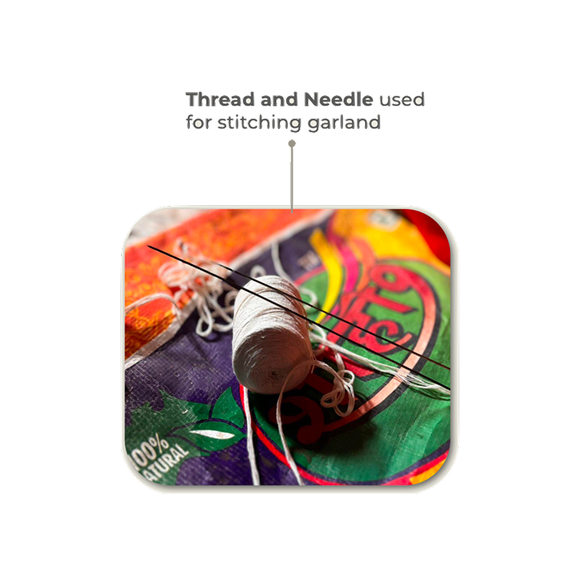
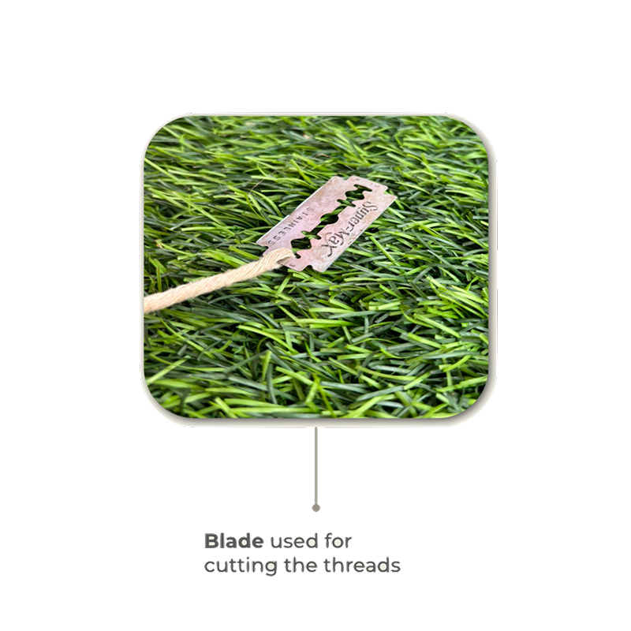
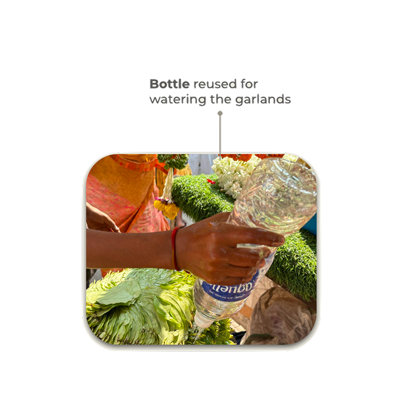
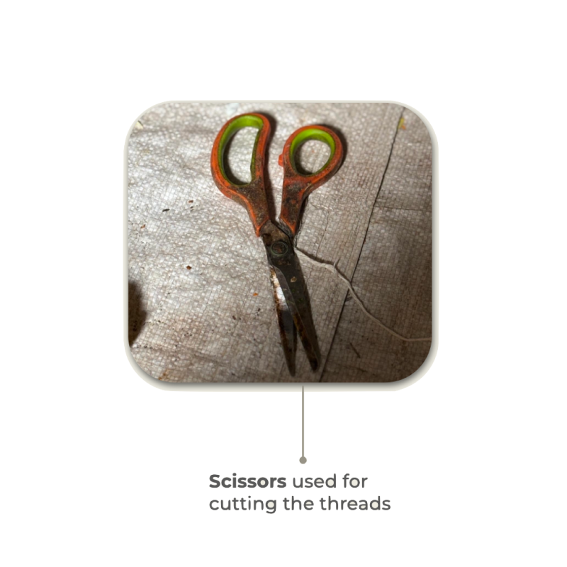
When observation became measurement.
Anyone can say this work looks hard. Numbers say how hard, and require action. We used RULA (Rapid Upper Limb Assessment) and REBA (Rapid Entire Body Assessment) — standard tools from occupational ergonomics — and scored the two postures that defined the working day.
Posture 01 · Haar making
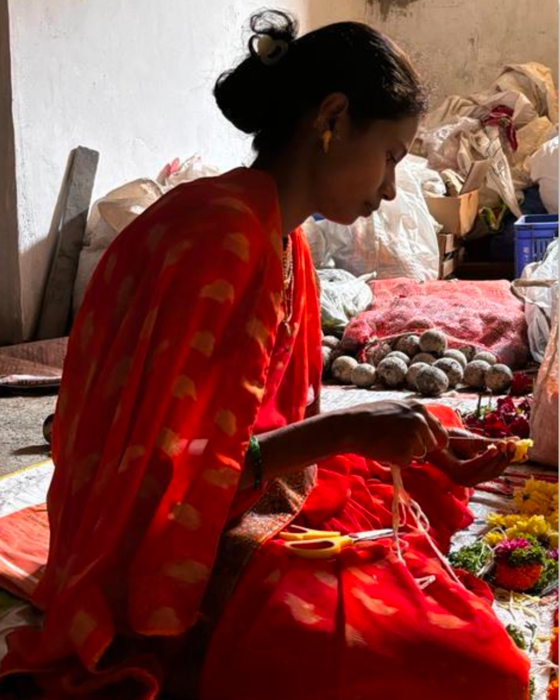
RULA
REBA
High risk. Action necessary soon.
Held 6+ hours daily. The score captures one moment of what is a sustained posture.
Posture 02 · Crate carrying
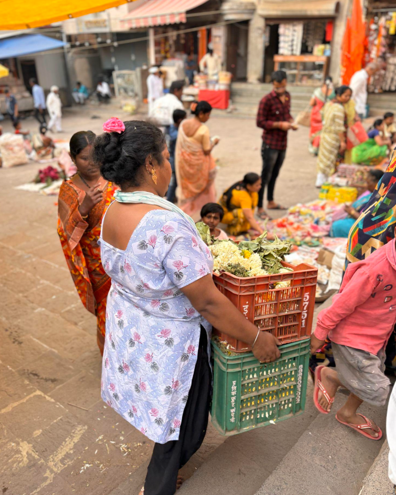
RULA
REBA
Very high risk. Action necessary now.
Highest single score in the study. Repeated several times per day under heavy load.
Every part of the day, quantified.
Two postures are two moments. We needed to know whether the rest of the working day was equally taxing. Using the Washington State Risk Factor Analysis Checklist, we scored every category across the working shift.
Total score
Action required
A score of 17 sits above the threshold where intervention is required across the whole job — not just any one task. Every category contributed; no part of the day was risk-free.
The harm gets a name.
Risk scores are abstract. Clinical diagnoses are not. We mapped each daily task to the musculoskeletal disorders it is documented to cause — the standard ergonomics → MSDS translation that turns observation into medical evidence.
This is where the project became impossible to dismiss. The harm has names that doctors already know.
The problem I chose to design for.
Three critical problems surfaced from the analysis. With three of us on the team, we split — each took one. Two teammates took crate carrying and the haar-making posture. I chose the workstation.
Problem 01
Crate carrying
Owned by teammate
Problem 02
Garland-making posture
Owned by teammate
Problem 03 · Mine
The unsafe workstation
Affects every task in the day.
Initial concepts
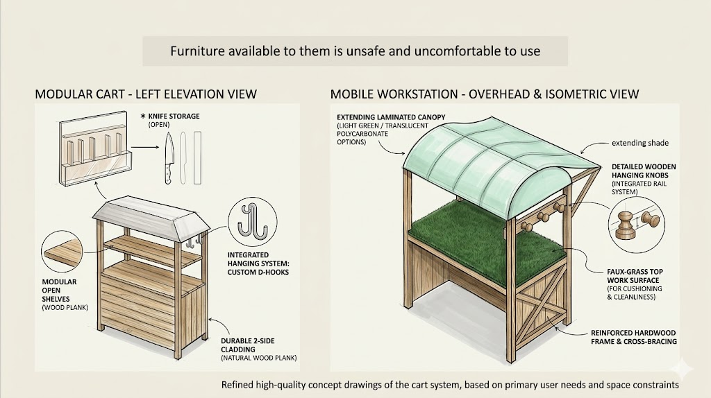
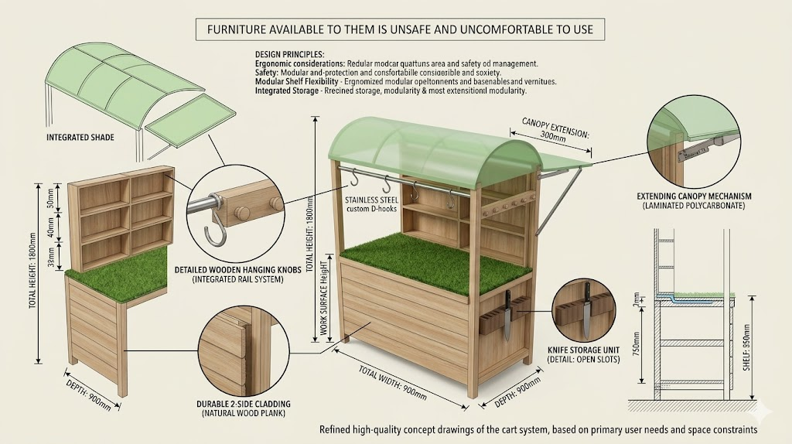
What I took from this.
The most important outcome of this study isn't a workstation design. It's making invisible harm visible.
A workstation redesign would address symptoms. What the discipline of ergonomics needs first is to recognise informal craft trades as legitimate subjects of study — not as edge cases, but as the daily working conditions of millions of people whose bodies have never been counted. A REBA score of 10 had been sitting in plain sight for generations of Uddave family members. We were the first to put a number on it.
The project also taught me to separate methodological rigour from design priority. The highest score doesn't automatically become the brief. Field measurement told us what was hurting; design judgment told us where to begin.
What I'd push further
Translate the findings into a one-page brief in Marathi for the workers themselves. This project documented harm but didn't yet return anything to the community that surfaced it. The next phase belongs to them.
The full assessment record.
A nine-sheet observational study translating posture, motion, and environment into measurable musculo-skeletal risk. Available as a single PDF for anyone reviewing the methodology.
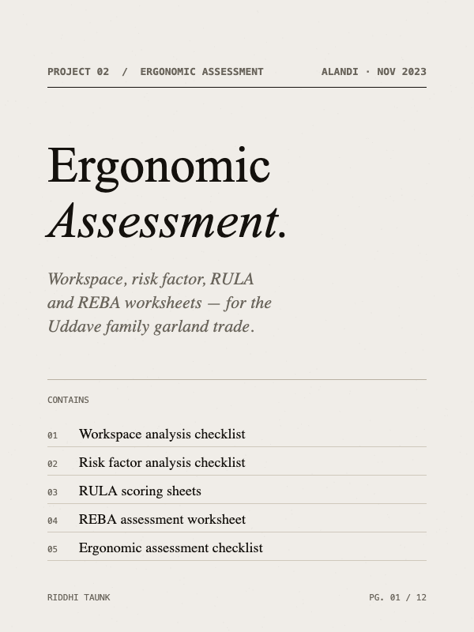
Contains
- Workspace Analysis Checklist
- Risk Factor Analysis Checklist
- Task → MSDS mapping
- RULA — haar making
- REBA Assessment Worksheet — haar making
- RULA — crate carrying
- REBA Assessment Worksheet — crate carrying
- Ergonomic Assessment Checklist